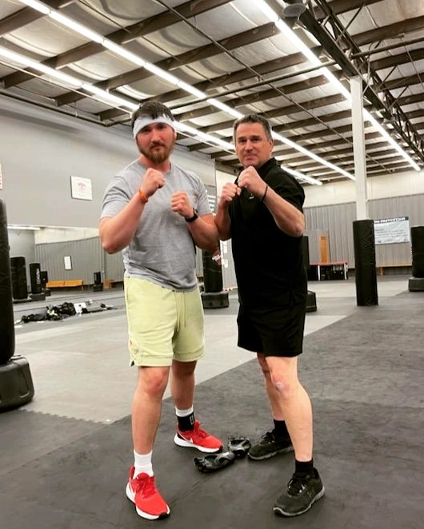

Josh keeps himself busy with Krav Maga and Jiu-Jitsu, which he enjoys not only as a way to stay physically fit but also as a method to build endurance and mental toughness. For him, it's more than just a workout—it's a practice that sharpens both body and mind.
For more information about Krav Maga and Jiu-Jitsu:
Josh spends many hours bodybuilding and strength training, pushing himself to achieve new personal goals and enjoying the process of building mental discipline.
Josh enjoys going to the shooting range, where he practices his marksmanship. He finds it both a challenging and relaxing way to focus and improve his skills.